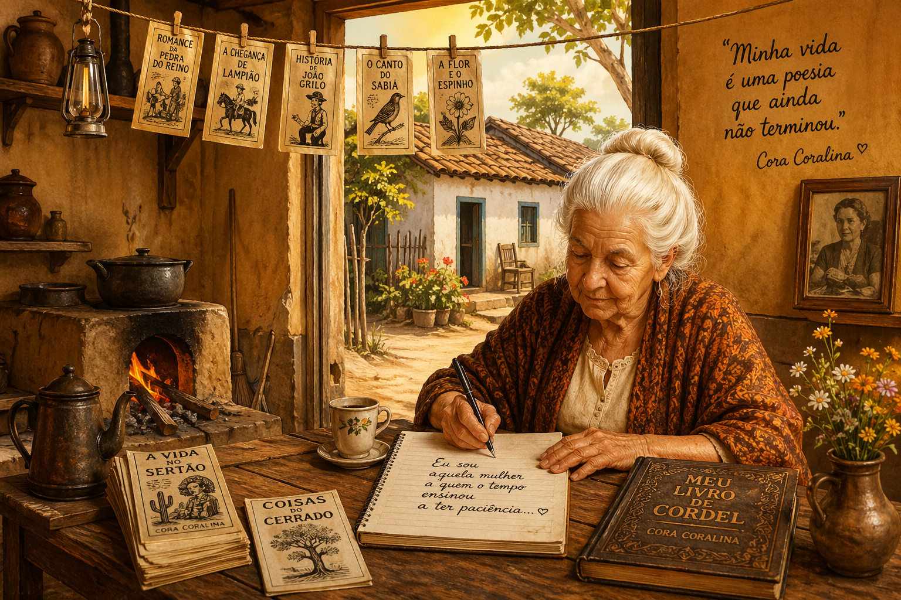

Análise da obra Meu livro de cordel – Cora Coralina
Dando continuidade ao seu material, agora vamos aprofundar uma das obras mais relevantes da literatura brasileira e presente no PAES UEMA 2027Meu livro de cordel, de Cora Coralina.
Neste guia completo, você encontrará um resumo detalhado, uma análise crítica aprofundada e possíveis temas de redação, com foco no que pode ser cobrado em provas e vestibulares.

Contexto histórico da obra
Publicada em 1976, a obra surge em um contexto em que a literatura brasileira buscava ampliar suas vozes, valorizando não apenas a tradição erudita, mas também a cultura popular. Nesse cenário, o cordel nordestino já era reconhecido como uma importante forma de expressão artística, marcada pela oralidade, pelo ritmo e pela ligação com o cotidiano.
O Brasil vivia um período de intensas transformações sociais e culturais, com crescimento urbano, desigualdades sociais persistentes e mudanças nas formas de expressão artística. A literatura passou a incorporar cada vez mais experiências populares, dando visibilidade a grupos historicamente marginalizados.
Cora Coralina, ao dialogar com o cordel, insere-se nesse movimento de valorização da cultura popular, rompendo com padrões elitistas e aproximando a poesia da vida real. Sua obra reflete uma perspectiva sensível sobre o cotidiano, especialmente das camadas mais simples da sociedade.
Assim, Meu livro de cordel não é apenas uma obra literária, mas também um documento cultural que evidencia a riqueza da tradição popular brasileira.
Biografia da autora
Cora Coralina, pseudônimo de Ana Lins dos Guimarães Peixoto Bretas, foi uma das mais importantes escritoras da literatura brasileira. Nascida na cidade de Goiás, sua obra ganhou reconhecimento nacional apenas tardiamente, quando já tinha mais de 70 anos.
Sua escrita é profundamente marcada pela experiência de vida, pela observação do cotidiano e pela valorização da cultura popular. Ao longo de sua trajetória, exerceu diversas atividades, o que contribuiu para uma visão ampla e sensível da realidade social.
A autora destacou-se por dar voz a personagens simples, como mulheres, trabalhadores e figuras marginalizadas, transformando suas vivências em poesia. Sua obra representa resistência, autenticidade e valorização da identidade cultural brasileira.
Hoje, Cora Coralina é reconhecida como uma das grandes vozes da literatura nacional, sendo amplamente estudada em escolas e universidades.
Resumo da obra Meu livro de cordel
A obra é composta por poemas que dialogam com a tradição do cordel, nos quais a autora presta homenagem aos poetas populares e às histórias do cotidiano.
Os textos não seguem uma narrativa linear, sendo construídos a partir de memórias, reflexões e observações da realidade, formando um conjunto que valoriza a experiência vivida e a sabedoria popular.
Entre os principais aspectos abordados, destacam-se:
- Valorização da literatura de cordel
- Memórias pessoais e experiências de vida
- Representação do cotidiano simples
- Reflexões sobre o tempo e a existência
- Presença de personagens populares
A obra revela como a simplicidade pode ser transformada em expressão poética profunda e significativa.
Análise da obra
1. Valorização da cultura popular
Cora Coralina estabelece um diálogo direto com a tradição do cordel, reconhecendo sua importância cultural e literária.
Ao fazer isso, a autora legitima formas populares de expressão, rompendo com a ideia de que apenas a literatura erudita possui valor artístico.
2. Memória e construção da identidade
A memória é um elemento central na obra, funcionando como instrumento de reconstrução da trajetória pessoal e coletiva.
- Resgate de experiências vividas
- Valorização da história individual
- Relação entre passado e presente
3. O cotidiano como espaço poético
Assim como no cordel, o cotidiano é transformado em matéria literária, revelando a beleza e a complexidade da vida simples.
A autora mostra que experiências comuns podem carregar significados universais.
4. Crítica social e invisibilidade
A obra também apresenta uma crítica à desigualdade social, dando visibilidade a personagens marginalizados.
Essa crítica é construída de forma sensível, sem perder o tom poético.
5. Linguagem e estilo
A escrita de Cora Coralina é marcada por:
- Linguagem simples e acessível
- Forte presença da oralidade
- Ritmo inspirado no cordel
- Tom confessional e autobiográfico
Esses elementos tornam a obra próxima do leitor e profundamente expressiva.
Possíveis temas de redação
- A valorização da cultura popular na sociedade brasileira
- O papel da memória na construção da identidade
- A invisibilidade social e seus impactos
- A literatura como forma de resistência cultural
- A importância da oralidade na preservação cultural
Possível tese para redação
A valorização da cultura popular é fundamental para a construção da identidade nacional, pois permite reconhecer e preservar saberes historicamente marginalizados, como evidencia a obra de Cora Coralina ao transformar o cotidiano e a tradição do cordel em expressão literária legítima.
Conclusão
A obra Meu livro de cordel destaca-se por sua capacidade de valorizar a cultura popular e transformar experiências simples em poesia significativa.
- Valorização da tradição do cordel
- Resgate da memória e identidade
- Representação do cotidiano
- Crítica social sensível
Além de ser essencial para o PAES UEMA 2027, a obra oferece um repertório sociocultural relevante para redações do ENEM e vestibulares, contribuindo para argumentos mais críticos e fundamentados.
Referências
- CORALINA, Cora. Meu livro de cordel. São Paulo: Global Editora, 1976.
- BOSI, Alfredo. História Concisa da Literatura Brasileira. São Paulo: Cultrix.
- CANDIDO, Antonio. Literatura e sociedade. São Paulo: Companhia Editora Nacional.
- Estudos sobre literatura popular e cordel brasileiro.
Explore Outros Conteúdos
Continue seus estudos acessando outras seções do site Mestre Kira: